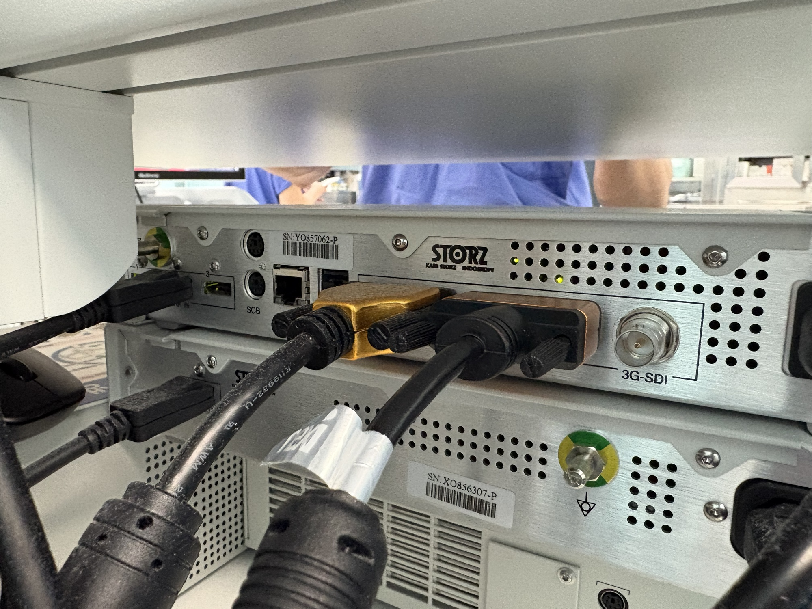

TC200, TC300 and DVI-D output
The May setup used an IMAGE1 S CONNECT TC200 and H3-LINK TC300. We captured 2D video by connecting the DVI-D output through an adapter and capture card.

Video output connection


Direct USB input and Mac wireless streaming
We connected the STORZ 2D output directly to Galaxy XR or streamed it wirelessly through a Mac. With USB, the headset receives video from the capture card. For wireless streaming, the Mac handles encoding and transmission.
Early wireless tests and frame rate adjustments
- 2026.05.21
720p·30fps wireless streaming
With capture at 60fps and a streaming target of 30fps, actual encoding remained at about 15fps. After fixing single-input handling and aligning capture and transmission timing, the average received frame rate at 1280×720 was 29.97fps.
- 2026.07.02
Preparing 60fps tests after on-site feedback
We displayed STORZ video alongside DICOM data. Wireless reception was about 30fps at the time. Feedback on motion smoothness and latency led to further 60fps tests and a direct USB connection.
60fps tests over USB and wireless
Early wireless tests began at 720p·30fps. After requests for smoother video on site, we ran repeated direct USB tests at 1080p60. We then checked the Mac wireless path with 1080p·60fps reference footage before reconnecting in the operating room on October 8.
Measurements by connection path
1080p60 · 5 repeated tests
Mean of USB video input (UVC) frame rate samples
1080p60 reference footage · 2 runs
Overall decoded frame rate averaged across both runs
Direct USB · Repeated 1080p60 tests
We set Galaxy XR USB input to 1920×1080·60fps and ran five tests. The logs collected on July 9 totaled 85 min 21 sec, with the longest run lasting 44 min 12 sec.
| Run | Log duration | Average FPS |
|---|---|---|
| 1 | 16 min 55 sec | 59.77 |
| 2 | 14 min 16 sec | 59.85 |
| 3 | 44 min 12 sec | 59.69 |
| 4 | 32 sec | 59.48 |
| 5 | 9 min 26 sec | 58.74 |
The mean of all 799 frame rate samples across the five runs was 59.64fps. In the final run, the frame rate fell while the input was being reopened, then returned to about 60fps.
Mac wireless · 1080p60 preflight tests
On September 30, we streamed 1920×1080·60fps reference footage from the Mac to prepare for the STORZ connection on site. We ran two tests with different bitrate settings, keeping H.264 and 2D mode unchanged.
| Metric | Run 1 | Run 2 |
|---|---|---|
| Target / maximum transmit bitrate | 22.5 / 30Mbps | 18 / 25Mbps |
| Display test duration | 3 min | 3 min |
| Overall average decoded FPS | 59.47 | 59.47 |
| Average received bitrate | 19.91Mbps | 16.71Mbps |
Both runs logged a brief freeze near the start, with no further freezes after the first 30 seconds. Feedback from the person wearing the headset during the first run was: “It displays correctly, and I don’t notice any stuttering.”
October 8 · Mac wireless streaming and vital signs
We streamed STORZ video through a Mac to Galaxy XR in an operating room at the cancer hospital. We connected repeatedly in H.264·2D mode. Two afternoon runs had average decoded frame rates of 60.00fps and 59.76fps.
| Run start | Mean of decoded FPS samples |
|---|---|
| 16:06 | 60.00 |
| 16:10 | 59.76 |
The 16:10 run logged a brief freeze. The afternoon wireless tests also prompted feedback about dizziness. A later attempt to connect the capture card directly to Galaxy XR stopped at the USB permission step, so no video opened.
On the same day, we connected vital signs between Mac Studio and Galaxy XR and checked the numeric display.
Related articleMac Studio and vital signs
Integrating vital signs into the Mac app and connecting Galaxy XR
Read more